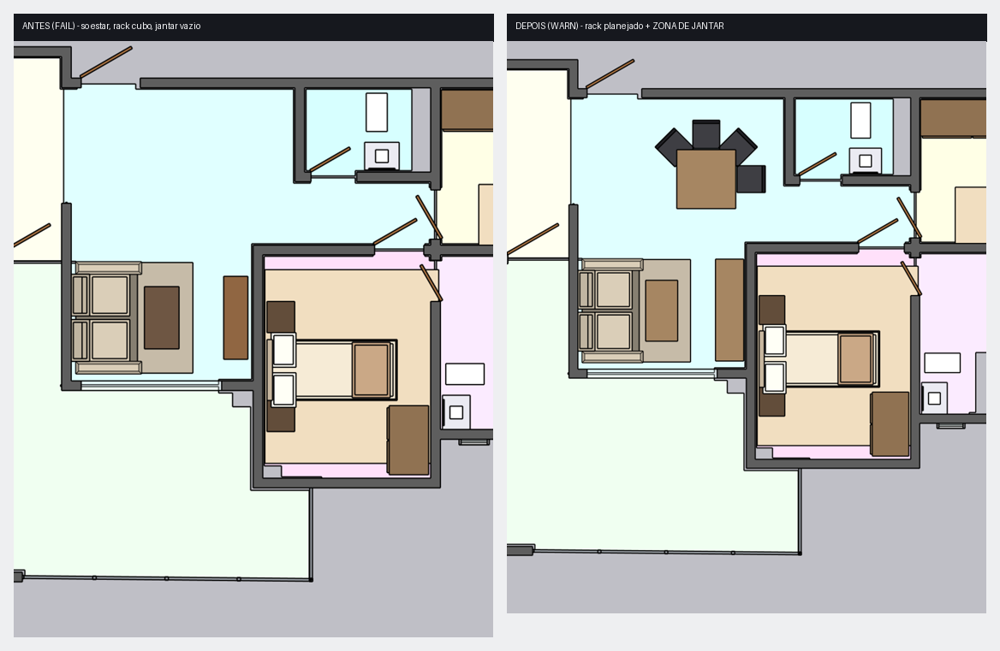
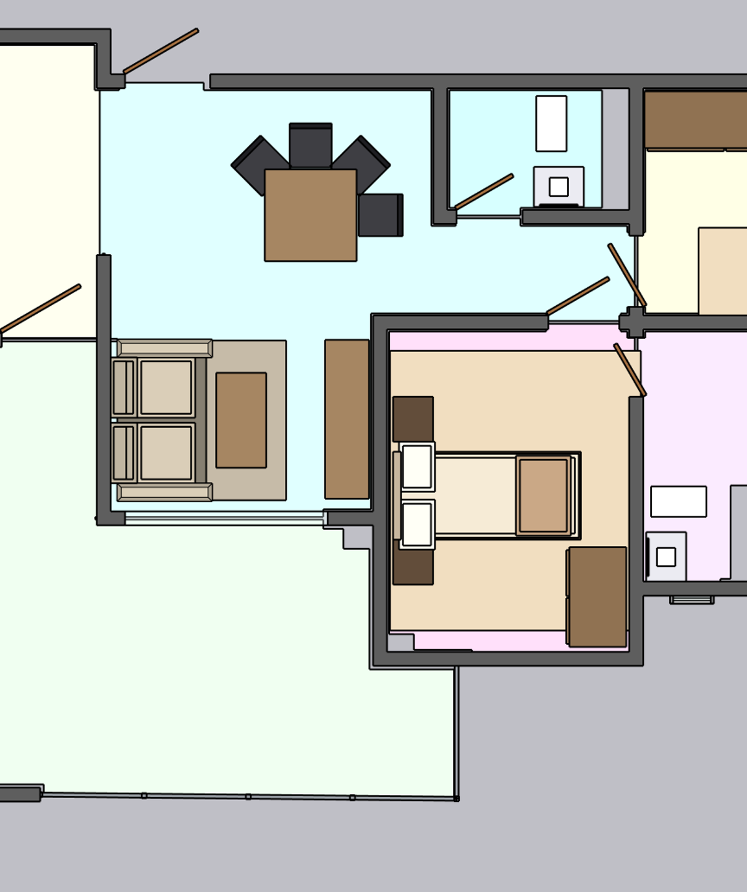

Resultado: Rack TV cubo (parts=1) -> painel planejado ancorado (parts=9) · Mesa de jantar AUSENTE -> mesa compacta 4 lug + cadeiras · Mesa de centro planejada · sofa frente-a-frente · sobra: ancoragem do rack ~15cm (WARN alto)
ANTES (FAIL) x DEPOIS (WARN) — top da sala
DEPOIS — sala corrigida (estar embaixo-esq + jantar em cima)